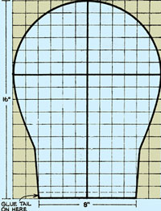
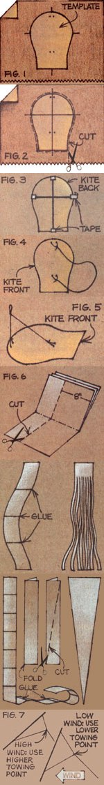

Last year (In MOTHER N0. 56), Margaret Greger presented herplans for "MOTHER's Recycled Kite". Well, those of March windsare blowin' again, and Meg has provided us with two moresureto-fly designs . . . which were suggested to her by GaryHinze of San Jose, California. The cobra kite and Its variant,the octopus, are highsoaring wind catchers that are well worththe half an hour or so It'll take you to construct one of 'em. Infact, you can see expensive, commercial "sky snakes"made of everyImaginable material-most anywhere . . . but rest assured that thedo-it-yourself versions will match the store-bought kitesmaneuver for maneuverl
STEP-BY-STEP LEADS SKYWARD
Here's what you need to make one of the recycled air soarers:a large grocery bag (which will make two kite faces), two 1 / 8"dowels (16" and 12" long), a 22" piece of cotton string for thebridle, tape, glue, newspaper for your kite's tall, scissors, aruler, a pencil, and a cardboard template.
STEP 1: Enlarge the scale diagram shown here, position thedrawn-to-size template on the front of the bag, trace around it,and mark the bridle points and the ends of the spars. Then removethe template and extend the end point marks across the head (asshown in Figs. 1 and 2).
STEP 2: Cut out the head.
STEP 3: Tape the 16" dowel spine on the back of the kite andthen-using the same adhesive material-fasten the 12"cross spar in place (see Fig. 3).
STEP 4: Turn the kite over and punch holes for the bridle.Next, tie one end of the 22" bridle string at the top (throughthe holes and around the spine) and the other end at the bottom,as Illustrated In Fig. 4.
STEP 5: Tie a loop In the bridle as shown in Fig. 5. If thestring's top "leg" is perpendicular to the face of the kite, yourbridle will be in the correct position for most winds.
STEP 6: The tall strips should be cut-8"wide-across the 24" width of a newspaper. (You can cutseveral sheets at once . . . see Fig. 6.)
OCTOPUS TAIL: Glue four 8" X 24" strips end to end, and cutlong 1"wide fringes Into the resulting strip as shown. Secure thetop edge of the multistranded tail to the back of the kite'slower edge.
COBRA TAIL: Glue ten 8" X 24" strips end to end, fold the longsheet down the middle, and cut it to a taper from the tip to thetop. You must crumple and smooth out the finished tail at leastthree times before gluing it to the kite. Of course, if the windis light, the cobra tail can be shortened.
BRIDLES AND TAILS
A "bridle" is the string which is fastened at one or morepoints to the face of the kite. (The cobra and octopus kites usea two-point bridle.)
With the proper bridle setting (see Fig. 7), the windpoweredtoys are all but foolproof in breezes up to 15 miles per hour. Ifthe wind is very light, a lower (near the mid point of the kite)oriole setting will hold the kite In a more nearly verticalstance . . . and thus allow It to present a greater surface areato the wind. For stronger gusts, on the other hand, a higher(close to the top of the kite) setting will let the toy flynearer to the horizontal, and permit more wind to slip away underthe base of the paper sky traveler.
Whenever a kite refuses to fly well, check the bridle first.Then, If you're satisfied that the setting is correct, your nextstep would be to adjust the tail's length.
Just be sure-when you make your kite-that youcrumple and smooth out Its newspaper tall (as in theinstructions) several times. Otherwise, the tail will "wag" thekite. (Of course, if you cut the tail into strips-as in theOctopus version-crumpling the paper won't benecessary.)
A NOTE ABOUT KITE LINES
A kite line should be strong and lightweight . . . but notfuzzy. An all-cotton line is fuzzy and creates "drag" on thekite. That is, the string itself has considerable surface for thewind to work on . . . so the kite files at a lower angle with theline sagging in front of It. (Commercial synthetic kite string isvery strong and will last for years, but-since It's neithertwisted nor braided-it does tend to fray and kink.)
You might try using old crochet thread, which you can oftenpurchase inexpensively at yard sales or from Goodwill stores. (Towind such twine, make a simple reel of notched cardboard.)Crochet thread will hold a cobra or octopus kite in light tomedium breezes . . . but for heavier kites and stronger winds,you should probably use braided or monofilament fishing line ofan appropriate weight (about ten-pound test will do).
Happy flying!
|
 REDRAW ON 1"" SQUARE |
 |
|